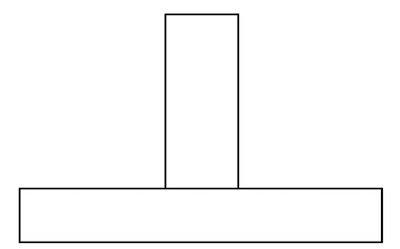
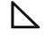
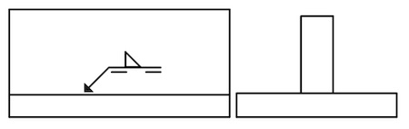
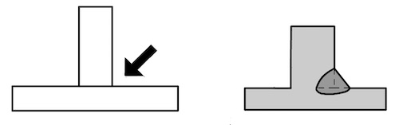
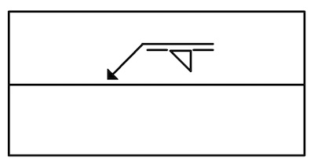
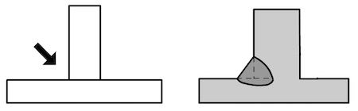
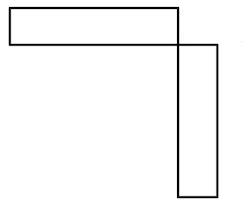
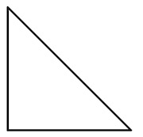
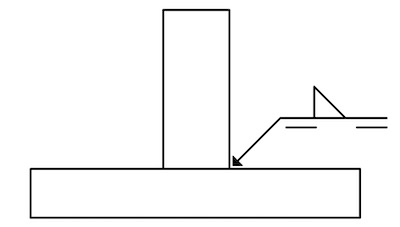
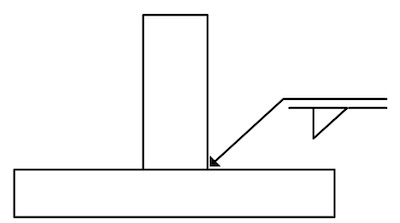

Kälfog
Kälfog är vanligt när man svetsar detaljer som bildar vinklar.

Så här ser symbolen ut.

Eftersom symbolen ligger mot den heldragna delen av referenslinjen ska svetsen läggas på pilsidan.

Svetsen hamnar på högersidan i vy från vänster

Om symbolen ritas i anslutning mot referenslinjen ska svetsen vara på andra sidan.
 
Här visas ett annat exempel på kälfog även kallad hörnfog.

Vilken fogtyp representerar grundsymbolen?

Svar:
På vilken sida ska svetsen läggas?

Svar:

Svar:
← J-fog Punktsvets →